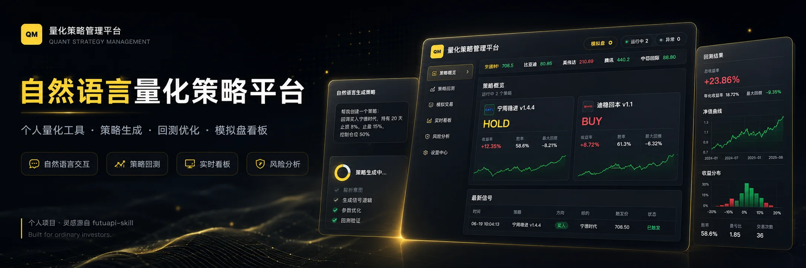
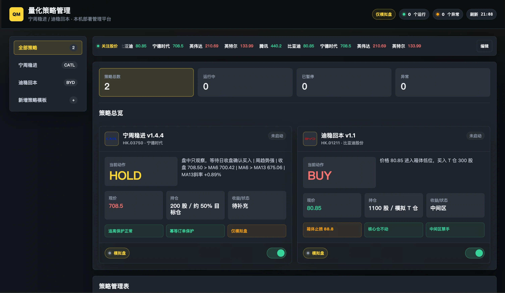
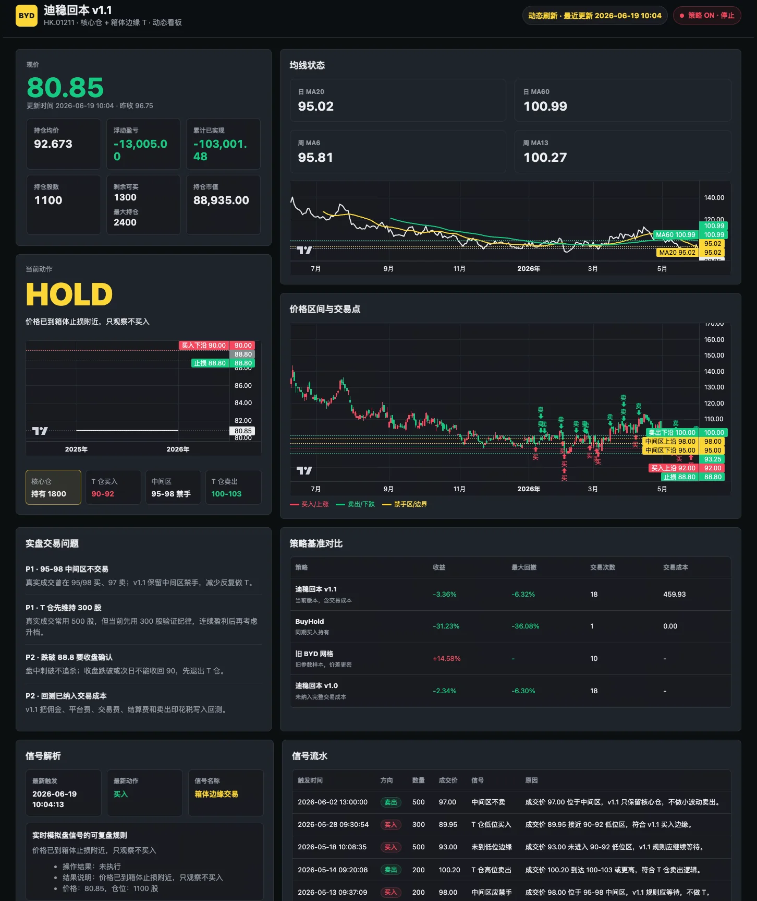
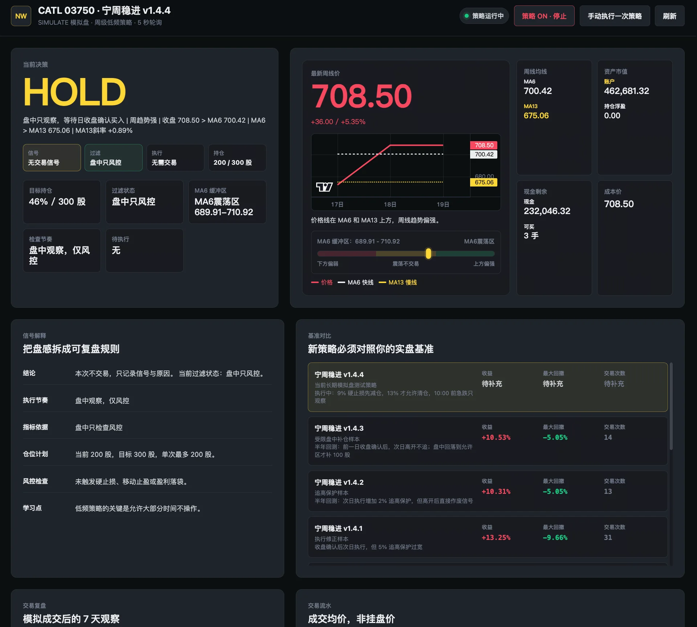

从盘感交易到规则交易
Vibe Coding × Quant Strategy
一个面向普通投资者的自然语言量化策略工具
这是一个由个人真实投资需求驱动的量化策略管理项目。它尝试通过自然语言交互、大模型分析、行情数据接入和策略回测，将原本复杂的量化交易流程，转化为普通投资者也能理解和使用的个人工具。
项目并不试图替代专业量化平台，而是希望帮助没有编程和量化背景的港股、美股散户，以更低的门槛建立自己的交易规则，减少依赖情绪和盘感进行决策。
GitHub 仓库： cenzihao1987-svg/Quantitative-Strategy-Management
01｜项目背景
作为一名港股和美股散户，我平时没有充足的时间持续盯盘。过去的交易决策更多依赖个人经验和临场感觉，虽然能够快速做出判断，但这种方式缺少稳定、可验证的规则，交易结果也容易受到情绪和市场波动影响。
在接触量化交易相关知识后，我开始思考：
能否把专业的量化指标和策略方法，转化成普通人也能快速使用的个人投资工具？
这个问题成为项目的起点。相比直接学习编程、搭建复杂模型，我更希望通过自然语言完成策略创建，让用户可以像与投资助手沟通一样，描述自己的交易习惯、风险偏好和操作逻辑，再由系统将这些模糊经验转化为可执行、可回测的策略规则。
02｜项目定位
项目定位为一个 自然语言驱动的个人量化策略管理工具，主要服务于没有专业量化背景、缺少盯盘时间，但希望建立规则化交易方式的普通投资者。
完整使用链路包括：
历史交易分析 → 交易风格诊断 → 策略生成 → 历史回测 → 策略迭代 → 模拟盘运行 → 实时看板监控
用户不需要从零配置复杂参数，而是可以直接描述自己的需求，例如：帮我分析过去两年的交易记录，找出频繁亏损的原因，并结合均线、RSI 和 KDJ，生成一套适合低频交易的策略。
系统再将自然语言拆解为具体的指标、条件、仓位规则、买卖信号和风险控制逻辑。
03｜从 futuapi-skill 获得启发
项目最初受到 futuapi-skill 的启发。
它让我意识到，富途 API、OpenD 行情服务和大模型能力之间，可以形成一条相对完整的个人量化链路：
- 通过接口读取港股、美股的历史行情和 K 线数据；
- 获取个人历史交易记录并分析交易行为；
- 使用大模型理解自然语言和个人交易风格；
- 将交易经验转换为结构化策略；
- 使用历史数据完成一年或多年的策略回测；
- 接入模拟交易账户，验证策略在实时行情中的运行情况。
基于这一思路，我没有直接从专业量化平台的完整架构出发，而是先搭建一个满足个人需求的最小闭环：让策略能够被描述、生成、验证、运行和观察。
04｜创作与设计过程
从个人问题定义产品，而不是先定义功能
项目的第一步不是制作看板，而是梳理自己真实的交易问题：
- 工作较忙，无法持续观察市场；
- 交易决策依赖盘感，规则不够稳定；
- 买入、卖出和止损标准容易临时变化；
- 交易结束后缺少系统化复盘；
- 接触了量化知识，但传统工具使用门槛较高。
基于这些问题，我将产品目标收敛为三个关键词：低门槛、规则化、可验证。
把交易经验翻译成机器规则
交易者通常会使用“趋势不错”“位置比较低”“可以观察一下”等模糊表达，但程序需要明确的判断条件。
因此，项目中最重要的过程，是将自然语言逐步转换为结构化策略，包括：
- 使用 MA20、MA50 等均线判断趋势；
- 使用 RSI、KDJ 等指标辅助判断位置和动量；
- 定义明确的买入区间、卖出区间和止损条件；
- 设置单次交易数量、目标仓位和最大仓位；
- 区分核心仓、机动仓和观察状态；
- 限制追高、频繁交易和盘中情绪化操作。
大模型在其中承担的并不是直接预测市场，而是帮助用户整理交易逻辑、发现规则冲突，并将个人经验固化为可以执行的策略。

用回测建立策略迭代机制
策略生成后，可以基于历史 K 线进行一年或多年的回测，并观察收益、回撤、交易次数和具体买卖信号。
回测不是为了证明策略一定有效，而是用于发现问题：
- 信号是否过于频繁；
- 买卖条件是否互相冲突；
- 止损范围是否过窄；
- 是否只适用于某一段行情；
- 是否存在明显的过拟合倾向。
每一次调整都会形成新的策略版本，使策略从一次性的文字规则，逐渐变成可以持续比较和迭代的个人资产。
先通过模拟盘验证真实运行过程
考虑到真实资金风险，目前项目优先接入虚拟交易盘。
模拟盘可以验证策略在实时行情中的完整运行情况，包括行情读取、信号触发、订单执行、仓位变化和异常状态。运行过程中遇到问题时，也可以继续通过自然语言描述现象，让系统协助定位并修正规则。
生成策略 → 回测验证 → 模拟运行 → 发现问题 → 自然语言修改 → 发布新版本
05｜Web 看板设计
Web 看板用于将复杂的量化策略运行状态转化为可快速理解的信息。
页面主要围绕三个问题组织：
当前需要做什么
通过醒目的 BUY、SELL、HOLD 状态，直接展示当前策略建议，并说明信号来源、触发条件和过滤原因。
策略为什么这样判断
展示当前价格、均线位置、指标状态、目标区间、止损线和仓位规则，帮助用户理解策略逻辑。
策略运行得怎么样
通过收益、回撤、持仓、成交记录、信号流水和历史版本对比，观察策略的实际执行表现和潜在风险。
视觉上采用深色金融数据界面，以黄色作为主要品牌色，并使用绿色、红色区分不同市场状态。大数字、策略状态和关键操作拥有更高视觉优先级，图表和详细数据作为辅助信息。

06｜使用 design.md 建立统一规范
为了避免页面在快速开发和持续迭代中出现样式失控，项目使用 design.md 作为整体美术和界面规范。
规范主要统一以下内容：
- 页面背景、卡片和分割线的层级关系；
- 品牌色、状态色和风险色的使用规则；
- 标题、正文、辅助文字和数字信息的字号层级；
- 卡片圆角、间距、边框和阴影；
- 图表、按钮、标签和状态组件的视觉形式；
- 数据密集型页面的信息优先级。
design.md 不只是视觉说明，也承担了设计与开发之间的约束作用。它让不同模块能够保持一致，同时降低通过自然语言生成或修改界面时产生视觉偏差的概率。
07｜当前问题与反思
目前项目已经验证了自然语言生成策略、历史回测、模拟盘运行和数据看板的基本链路，但整体形态仍然存在明显问题。
首先，平台形态过重。对于个人投资者来说，完整的管理后台包含过多页面、图表和配置项，实际使用时仍需要较高的理解成本。
其次，自然语言生成的策略需要更强的约束和解释机制。系统不仅要给出规则，还需要说明规则来源、修改范围以及可能带来的风险。
此外，历史回测与真实交易之间仍存在差异。手续费、滑点、成交延迟、流动性和极端行情，都可能影响策略最终表现。模拟盘可以降低验证风险，但不能完全代表实盘结果。
因此，这个项目目前更适合作为一个个人量化实验和设计验证，而不是成熟的专业交易产品。

08｜后续方向：从平台收敛为 Skill
经过这一阶段的实践，我逐渐意识到，个人量化工具不一定需要一个庞大的独立平台。
相比让用户进入后台完成复杂配置，更合理的方向是将核心能力进一步封装为一个轻量化 Skill。用户只需要通过对话提出需求，系统便可以自动调用行情、历史交易、回测和策略管理能力，并在需要时生成简洁的结果卡片或临时看板。
后续计划将当前平台逐步拆解为以下能力：
- 交易记录分析 Skill；
- 个人交易风格诊断 Skill；
- 自然语言策略生成 Skill；
- 策略回测与版本对比 Skill；
- 模拟盘运行监控 Skill；
- 风险与异常检查 Skill。
Web 看板将不再作为产品主体，而是作为 Skill 执行后的可视化结果，用于承载策略状态、回测结果和实时信号。
项目的下一阶段，不是继续增加更多页面，而是持续减少用户需要理解和操作的内容，让量化能力真正隐藏在自然语言交互之后。
项目总结
这是一次从个人投资问题出发，对自然语言、大模型与量化交易结合方式的探索。
项目将分散的行情数据、技术指标、交易记录、回测能力和模拟盘执行整合在同一条流程中，尝试帮助普通投资者把模糊的盘感转化为明确规则，把一次性的交易判断转化为可以验证、复盘和持续迭代的个人策略。
它目前仍然存在架构偏重、规则解释不足和实盘验证有限等问题，但已经完成了最核心的验证：
普通投资者可以不从编程开始，而是从描述自己的交易方式开始，逐步建立属于自己的量化策略。